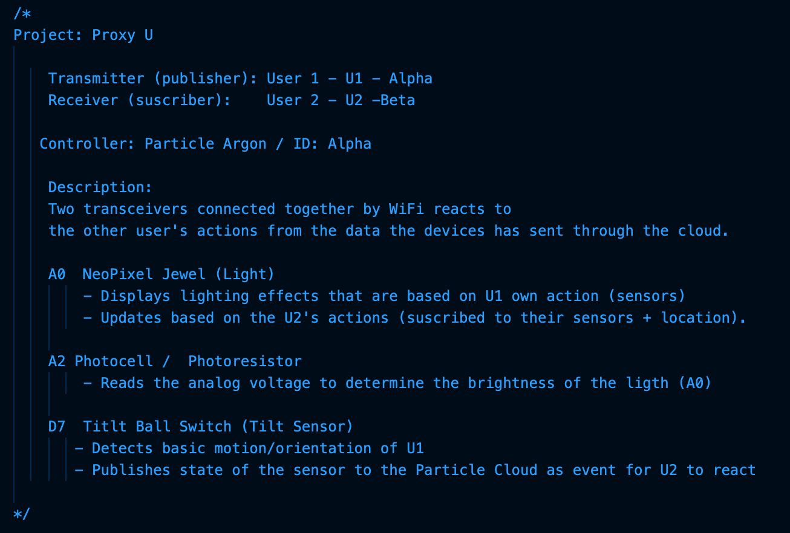
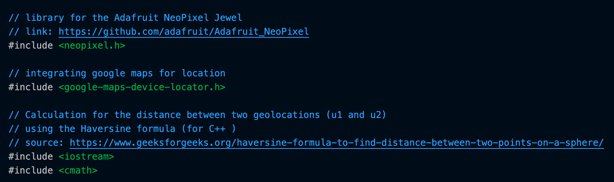
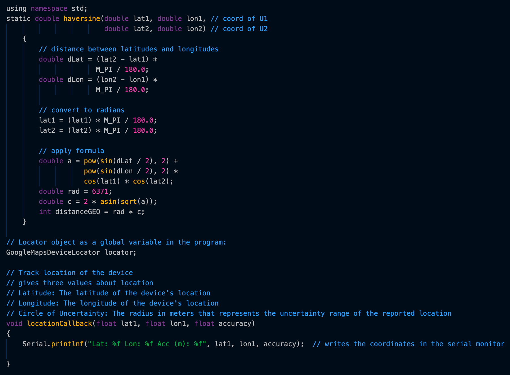
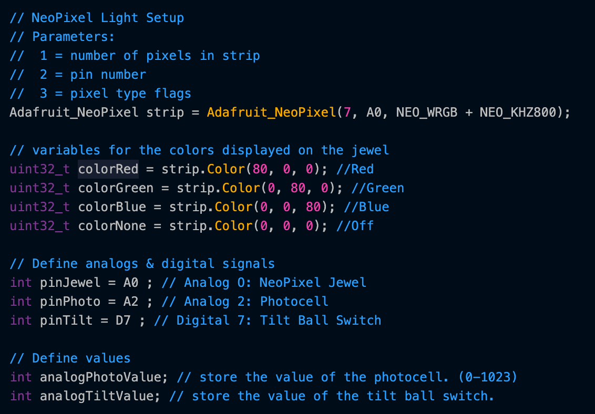
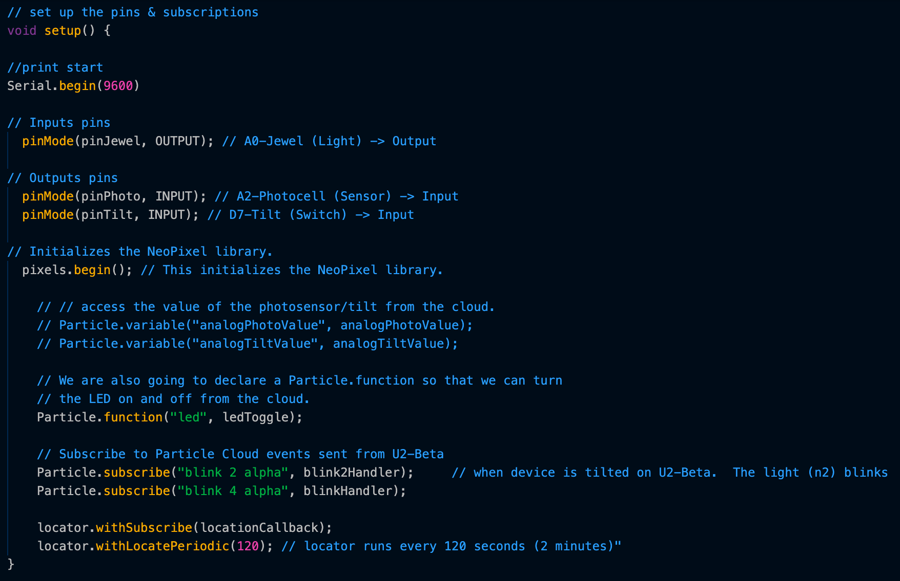
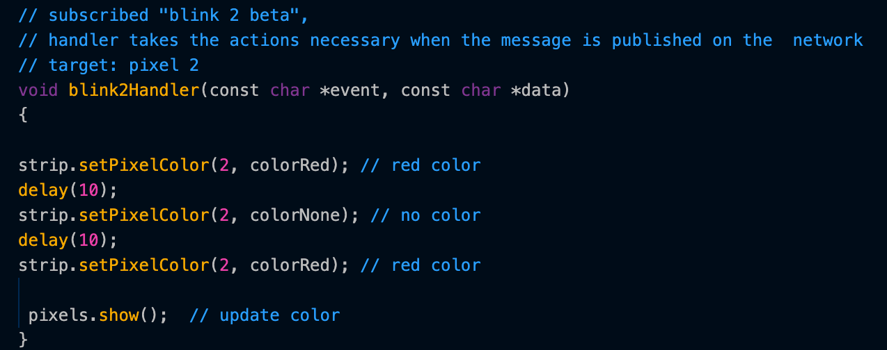
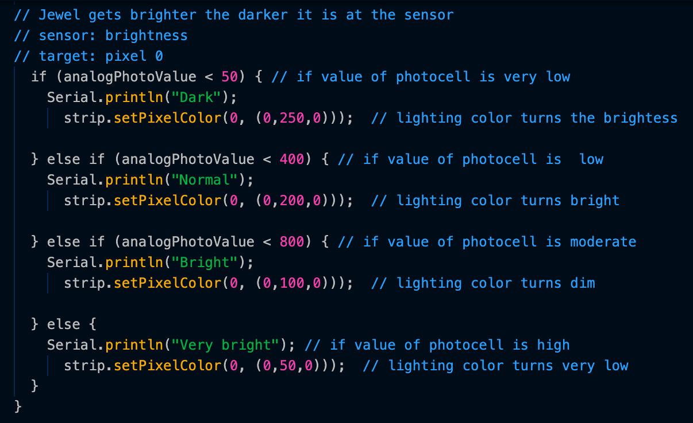
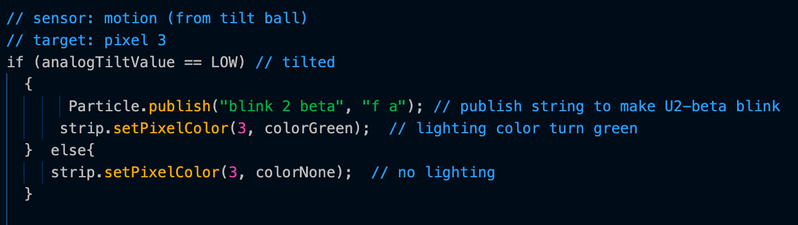
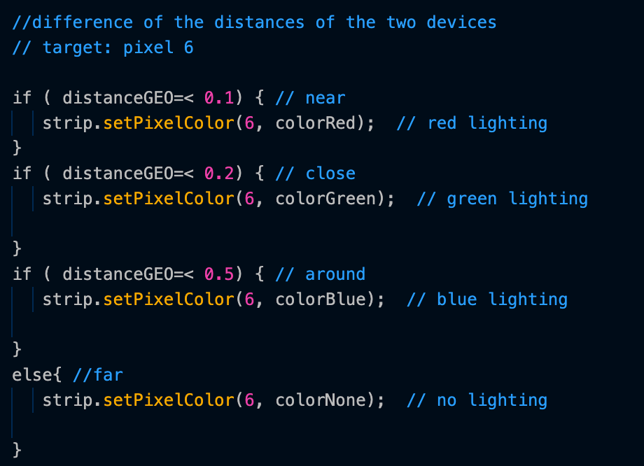

The Process
components
Items Listed
- Lithium Battery
- NeoPixel Jewel
- Particle Argon
- Photoresistor
- Tilt Ball Switch
components break down

Battery power for the device
NeoPixel Jewel

Lighting component with 7 different "pixels" to individually program. Each of the pixels will change colors according to the sensor/function they are assigned to
Particle Argon: Wi-fi + Bluetooth

A development kit with Wi-Fi and Bluetooth radios for building connected projects and products. Has access to geolocation of the device through the Google Maps Geolocation API.
Photoresistor

A sensor to capture the light that shines on it. The value will determine the brightness of the lighting component (NeoPixel).
Tilt Ball Switch

A sensor to detect orientation or inclination. The action will trigger a signal to the other party's device.
interactions map
diagram
physical build
coding
Program used: Visual Studio Code
Language: C++

project + small summary

libraries used

calculation of the distance between two geolocations

neopixel setup/variables + defining pins/values

setup

function to blink the jewel in response to the other user

adjust jewel's brigthness depending on the value of the photoresistor

pays attention the tilt sensor to send information to the cloud

lights the jewel according to the distance calculated between the two points